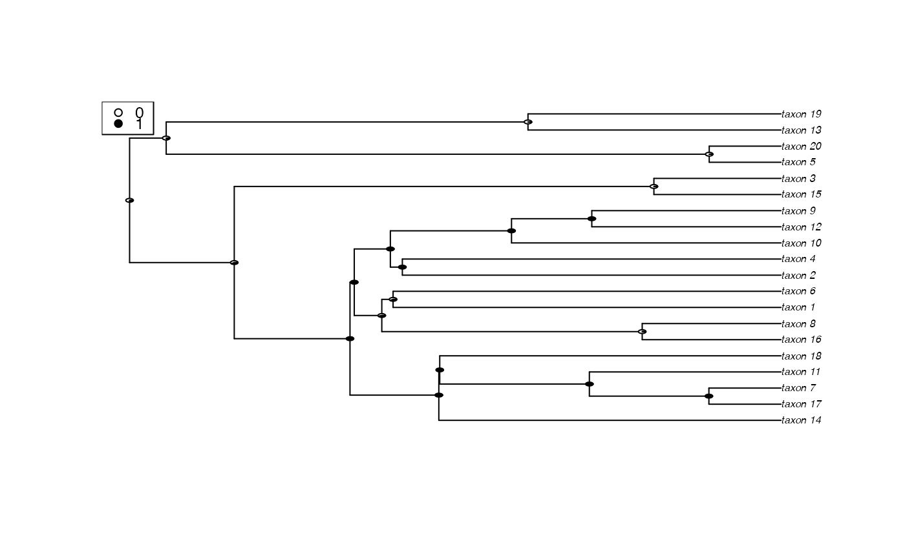

rayDISC.RdFits a model of evolution for categorical traits, allowing for multi-state characters, polymorphisms, missing data, and incompletely resolved trees
a phylogenetic tree, in ape “phylo” format.
a data matrix containing species information (see Details).
specifies the number of traits to included in the analysis.
specified the character to analyze.
a user-supplied rate matrix index of parameters to be optimized.
specifies the underlying model.
method used to calculate ancestral states at internal nodes.
whether to reconstruct states jointly with the rates or subsequent to the rates being optimized.
a logical indicating whether the ascertainment bias correction of Lewis et al. 2001 should be used. The default is FALSE.
a vector of transition rates. Allows the user to calculate the likelihood given a specified set of parameter values to specified as fixed and calculate the likelihood.
a vector used to fix the probabilities at the root, but “yang” and “maddfitz” can also be supplied to use the method of Yang (2006) and FitzJohn et al (2009), respectively (see details).
initial values used for the likelihood search. Can be a single value or a vector of unique values for each parameter. The default is ip=1.
lower bound for the likelihood search. The default is lb=0.
upper bound for the likelihood search. The default is ub=100.
a logical indicating whether progress should be printed to the screen.
logical indicating whether diagnostic tests should be performed. The default is FALSE.
__THIS FUNCTION IS NO LONGER NECESSARY AS IT IS NOW ENTIRELY SUBSUMED WITHIN__ corHMM (see _Generalized corHMM_ vignette). But we still provide it for those that are more comfortable using it than exploring the new corHMM function. As before, rayDISC takes a tree and a trait file and estimates transition rates and ancestral states for binary or multistate characters. The first column of the trait file must contain the species labels to match to the tree, with the second, third, fourth, and so on, corresponding to the traits of interest. Use the charnum variable to select the trait for analysis. Also, the input phylogeny need not be bifurcating as the algorithm is implemented to handle multifucations. Polytomies are allowed by generalizing Felsenstein's (1981) pruning algorithm to be the product of the probability of observing the tip states of n descendant nodes, rather than two, as in the completely bifurcating case.
The user can fix the root state probabilities by supplying a vector to the root.p. If the user supplies the flag root.p=“yang”, then the estimated transition rates are used to set the weights at the root (see pg. 124 Yang 2006), whereas specifying root.p=“maddfitz” employs the same procedure described by Maddison et al. (2007) and FitzJohn et al. (2009). Note that the default root.p=NULL assumes equal weighting among all possible states.
Ambiguities (polymorphic taxa or taxa missing data) are assigned likelihoods following Felsenstein (2004, p. 255). Taxa with missing data are coded “?” with all states observed at a tip. Polymorphic taxa are coded with states separated by an “&”. For example, if a trait has four states and taxonA is observed to be in state 1 and 3, the character would be coded as “1&3”. corHMM then uses this information to assign a likelihood of 1.0 to both states. Missing data are treated as ambiguous for all states, thus all states for taxa missing data are assigned a likelihood of 1.0. For example, for a four-state character (i.e. DNA), a taxon missing data will have likelihoods of all four states equal to 1.0 [e.g. L(A)=1.0, L(C)=1.0, L(G)=1.0, L(T)=1.0].
In all ancestral state reconstruction implementations, the rates are first estimated, and subsequently, the MLE estimates of the rates are used to determine either the state probabilities (i.e., marginal or "scaled") or maximum likelihood states at nodes. This is the default – i.e., the state.recon="subsequently" argument. However, for this function only, we also allow for both rates and states to be estimated jointly. This can be done with state.recon="estimate". We also allow for a hypothesis about states at all or even some nodes to help fixed, with the rates (and in some cases some of the states) being estimated. This is state.recon="given". For more information please see Vignette "Getting Likelihoods From Reconstructions".
rayDISC returns an object of class rayDISC. This is a list with elements:
the maximum negative log-likelihood.
Akaike information criterion.
Akaike information criterion corrected for sample size.
The number of traits specified.
a matrix containing the maximum likelihood estimates of the transition rates.
a matrix containing the approximate standard errors of the transition rates. The standard error is calculated as the square root of the diagonal of the inverse of the Hessian matrix.
The indices of the parameters being estimated are returned. The numbers correspond to the row in the eigvect and can useful for identifying the parameters that are causing the objective function to be at a saddlepoint.
The setting describing whether or not the Lewis ascertainment bias correction was used.
Internal settings of the likelihood search.
User-supplied dataset.
User-supplied tree.
The likeliest states at each internal node.
NULL
The number of iterations used by the optimization routine.
The eigenvalues from the decomposition of the Hessian of the likelihood function. If any eigval<0 then one or more parameters were not optimized during the likelihood search.
The eigenvectors from the decomposition of the Hessian of the likelihood function is returned.
A logical for diagnosing if rate parameters were constrained by lb or ub values during optimization.
A list of taxa which were listed in the data matrix, but were not present in the passed phylo object. These taxa will be excluded from the analysis. message.tree is null if all taxa in data are included in tree.
A list of taxa which were present in the passed phylo object, but lacked data in the passed data matrix. These taxa will be coded as missing data (all states equally likely). message.data is null if all taxa in tree have entries in data matrix.
Felsenstein, J. 1981. A likelihood approach to character weighting and what it tells us about parsimony and compatibility. Biological Journal of the Linnean Society 16: 183-196.
Felsenstein J. 2004. Inferring phylogenies. Sunderland MA: Sinauer Associates.
FitzJohn, R.G., W.P. Maddison, and S.P. Otto. 2009. Estimating trait-dependent speciation and extinction rates from incompletely resolved phylogenies. Systematic Biology 58:595-611.
Lewis, P.O. 2001. A likelihood approach to estimating phylogeny from discrete morphological character data. Systematic Biology 50:913-925.
Maddison, W.P., P.E. Midford, and S.P. Otto. 2007. Estimating a binary characters effect on speciation and extinction. Systematic Biology 56:701-710.
# \donttest{
### Example 1
data(rayDISC.example)
## Perform ancestral state estimation, using an asymmetric model of evolution and marginal
## reconstruction of ancestral states
recon <- rayDISC(rayDISC.example$tree,rayDISC.example$trait,model="ARD",
node.states="marginal")
#> State distribution in data:
#> States: 0 0&1 1 1&0
#> Counts: 10 2 8 0
#> Initializing...
#> Finished. Beginning thorough search...
#> Finished. Inferring ancestral states using marginal reconstruction.
## Plot reconstructions on tree
plotRECON(rayDISC.example$tree,recon$states)

### Example 2
## Perform ancestral state estimation on second character, using a single-rate model of
## evolution, marginal reconstruction of ancestral states, and setting the lower bound for
## parameter estimates to 0.01
recon <- rayDISC(rayDISC.example$tree,rayDISC.example$trait,charnum=2,model="ER",
node.states="marginal",lb=0.01)
#> State distribution in data:
#> States: 0 1
#> Counts: 10 10
#> Initializing...
#> Finished. Beginning thorough search...
#> Finished. Inferring ancestral states using marginal reconstruction.
### Example 3
## Perform ancestral state estimation on third character, using a single-rate model of
## evolution and joint reconstruction of ancestral states
recon <- rayDISC(rayDISC.example$tree,rayDISC.example$trait,charnum=3,
model="ER",node.states="joint")
#> State distribution in data:
#> States: 0 1 2
#> Counts: 14 3 3
#> Initializing...
#> Finished. Beginning thorough search...
#> Finished. Inferring ancestral states using joint reconstruction.
# }